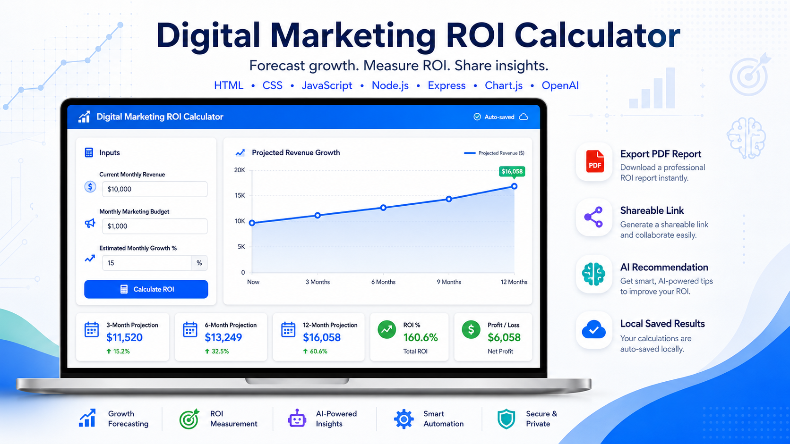

ROI Inputs
Users enter current monthly revenue, proposed monthly marketing budget, and estimated monthly growth percentage with clear field guidance.
Project Showcase
Forecast growth · measure ROI · share insights

This project implements an AI Game Changer course assignment to build an interactive ROI calculator for a digital marketing consultant. The calculator helps small-business prospects estimate how monthly marketing investment may affect revenue over time.
The production app is a Node.js and Express project with a browser frontend. This GitHub Page is the static project showcase and documentation hub: it explains what was built, how the pieces fit together, which checks cover the behavior, and where the supporting docs live.
Users enter current monthly revenue, proposed monthly marketing budget, and estimated monthly growth percentage with clear field guidance.
The app calculates three-month, six-month, and twelve-month revenue projections, annual ROI, and total profit or loss.
Chart.js renders a month-by-month revenue line chart so the projection is easier to understand during a sales discussion.
Results can be encoded into a shareable URL, restored from URL parameters, and saved locally for the next visit.
jsPDF exports a concise report that includes inputs, result summaries, the chart when available, and any AI recommendation.
Express keeps the OpenAI API key on the server and returns safe browser-facing messages for recommendation errors.
public/app.js coordinates UI state while
public/js/calculator.js,
public/js/chart.js, public/js/dom.js,
public/js/pdf.js, and
public/js/storage.js keep feature logic focused.
server.js serves static files, exposes a health
check, validates recommendation requests, and calls OpenAI only
from the server environment.
The project uses Node's built-in test runner for focused unit and integration coverage without adding a heavyweight test stack.
npm test
Runs calculator, backend, and static documentation checks.
node --test tests/calculator.test.js
Checks validation, ROI calculations, formatting, and series data.
node --test tests/server.test.js
Exercises health, static HTML, request validation, and safe errors.
tests/E2E_CHECKLIST.md
Documents browser checks for calculate, chart, PDF, share, and AI flows.
There is no hosted live application for now. To inspect the app, install dependencies and start the Express server from the repository root:
npm install
npm start
The server serves public/index.html, while this
docs/ page remains a static GitHub Pages showcase.